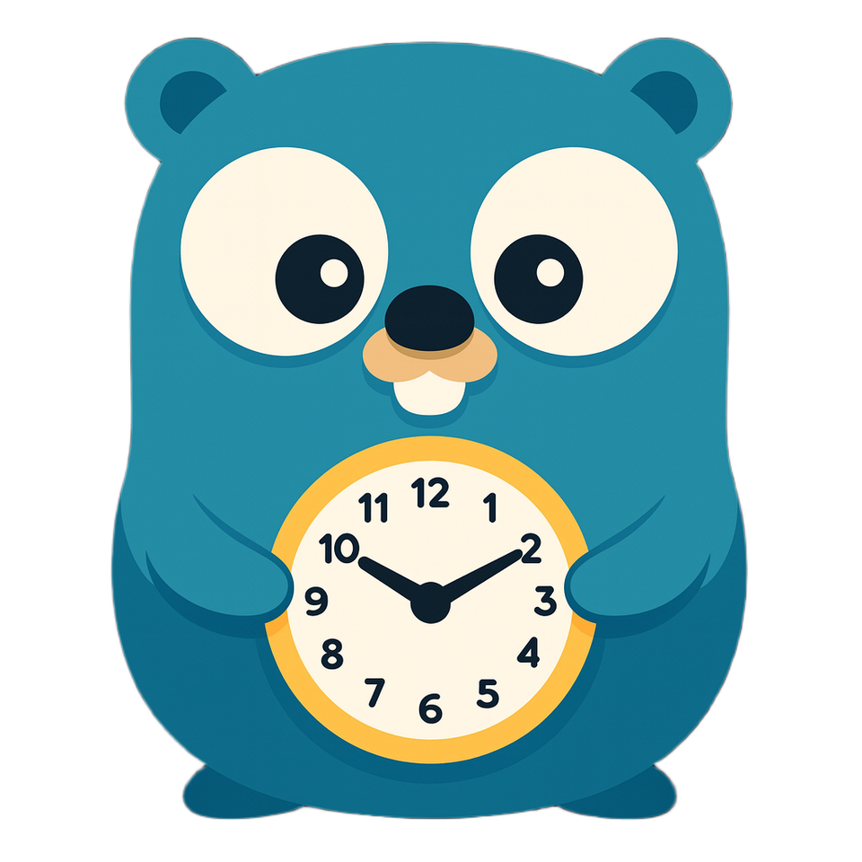
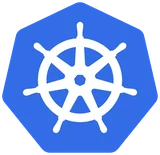
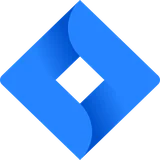
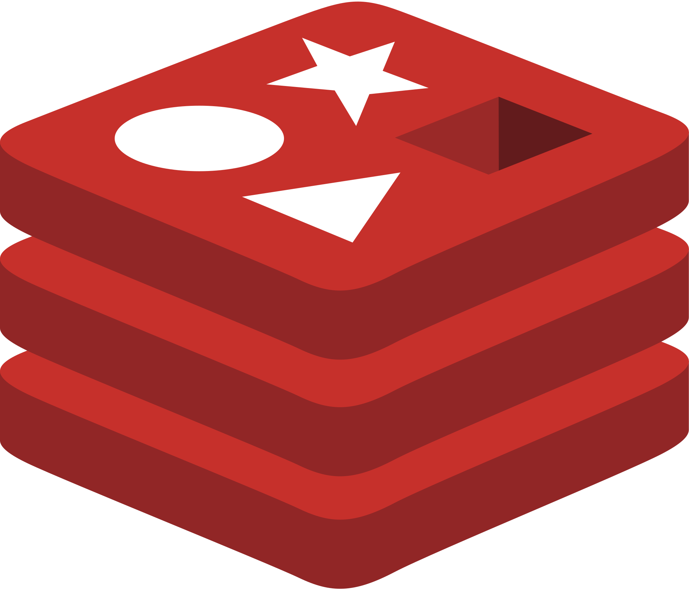
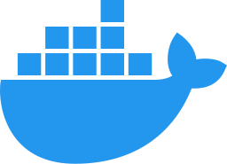

Подробный воркшоп по gRPC
Соберёшь на Go сервис, который работает и по gRPC, и по REST, со Swagger и стримом событий. Разберёшься, как всё устроено внутри, даже если раньше ничего не получалось.
Забрать воркшоп в Telegram




Знакомо?
- Про gRPC только слышал, а на работе его завезли, и надо разбираться прямо сейчас
- Пробовал сам: вроде всё понятно, а начинаешь делать, и не выходит
- Код сгенерировался, а как из него собрать рабочий сервер, непонятно
- На проекте gRPC нет, и кажется, что отстаёшь от рынка
- Валидации и преобразования пишешь руками, хотя это можно генерировать
Почему не получалось
Большинство туториалов заканчивается на самом простом: один .proto, один сервер, один вызов. А в реальном проекте сразу вылезают валидация, интерцепторы, REST для фронта, Swagger и стримы.
Инфа про всё это разбросана по разным статьям: собираешь её по кусочкам, путаешься, а цельной картины так и не появляется.
Поэтому я собрал всё в один воркшоп, где мы пишем сервис с нуля и шаг за шагом доводим его до уровня прода.
Программа воркшопа
Подробно разберём
-
Разбираем, как устроен Protobuf
- Погружаемся в проект: настраиваем форматеры и линтеры
- Чем protobuf лучше JSON и почему он меньше весит в сети
- Типы, enum, repeated, вложенные сообщения
- Как не сломать контракт: номера полей, reserved, версии API
- Как отличить пустую строку от «ничего не передали»
РезультатОписали контракт сервиса в proto-файле и разобрались, как менять его, не ломая клиентов
-
Выясняем, чем gRPC быстрее HTTP
- Что не так с HTTP/1.1: дорогие TCP-соединения, head-of-line blocking, тяжёлые заголовки
- Что поменял HTTP/2 и почему gRPC работает на нём
- Как описывать ручки в proto-файле
РезультатПонимаешь, что gRPC берёт от HTTP/2 и почему он быстрее
-
Генерируем код: protoc, buf, EasyP
- Сравниваем protoc, buf и российский EasyP: плюсы и минусы каждого
- Генерируем код всеми тремя и смотрим, чем отличается результат
- Линтер для proto-файлов и проверка ломающих изменений
- Где buf упирается в VPN и как это обойти
РезультатНастроили одну команду, которая проверяет proto-файл линтером и генерирует из него готовый Go-код для сервера и клиента
-
Поднимаем свой gRPC-сервер
- Пишем CRUD-сервис на Go
- Коды ошибок gRPC: not found, invalid argument и другие
- Reflection и graceful shutdown
- Продовые вопросы: отдавать ли ошибку при удалении несуществующей записи и что такое soft delete
РезультатПодняли собственный сервис и разобрались в кодах ошибок gRPC, reflection и аккуратной остановке сервера без потери запросов
-
Пишем клиента и тестируем ручки
- Пишем свой gRPC-клиент на Go
- Дёргаем ручки через gRPCurl или Postman
- Разбираем ошибку сервера на стороне клиента
РезультатНаписали Go-клиент, который вызывает все ручки сервиса, и научились проверять любую ручку из терминала
-
Подключаем валидацию и интерцепторы
- Правила валидации прямо в proto: длина строки, email, IP, regexp
- Интерцепторы: middleware из мира gRPC
- Выносим валидацию в интерцептор, замеряем время ответа, собираем цепочку
РезультатПроверки входных данных срабатывают сами на каждую ручку, а время ответа каждой ручки пишется в лог
-
Добавляем REST и Swagger через gRPC-Gateway
- Фронту нужен REST, а у тебя gRPC: поднимаем оба из одного proto-файла
- Генерируем OpenAPI-спеку
- Поднимаем Swagger UI и вызываем ручки прямо из браузера
РезультатТот же сервис отвечает фронту по REST, а в браузере открывается Swagger, где можно вызвать любую ручку
-
Настраиваем стриминг событий
- Три вида стримов и когда какой нужен
- Серверный стрим: подписка на события в реальном времени
- Клиент, который слушает стрим
РезультатКлиент подписывается на изменения и в реальном времени получает события: корабль создан, обновлён, удалён
Весь код, который мы пишем на воркшопе, будет у тебя в репозитории.
Можешь идти по нему шаг за шагом и повторять всё самому.
И да, это всё бесплатно) Поэтому чего ты ждёшь, забирай воркшоп скорее
Забрать воркшоп в TelegramЧто будет на выходе
После воркшопа у тебя будет рабочий сервис на Go:
- gRPC-сервер с валидацией и интерцепторами
- REST для фронта через gRPC-Gateway
- Swagger, где можно потыкать ручки
- Стрим событий в реальном времени
Преподаватель — Олег Козырев
-
BigTech (под NDA)Staff Engineer
Разрабатываю LLM-платформу для создания ИИ продуктов внутри компании
-
BigTech (под NDA)Senior Engineer
Разрабатывал внутреннюю платформу для сотен сервисов корпорации
-
Ozon TechSenior Engineer
Разрабатывал сервисы логистики, модерации контента и мониторинга доставки
-
Route 256Ex-преподаватель и тьютор
Менторил и преподавал курсы по построению микросервисов в школе Ozon Tech
>7 000 часов
Практики на реальных проектах в Big Tech компаниях
7+ лет
Занимаюсь программированием
8 500+
Подписчиков на YouTube-канале